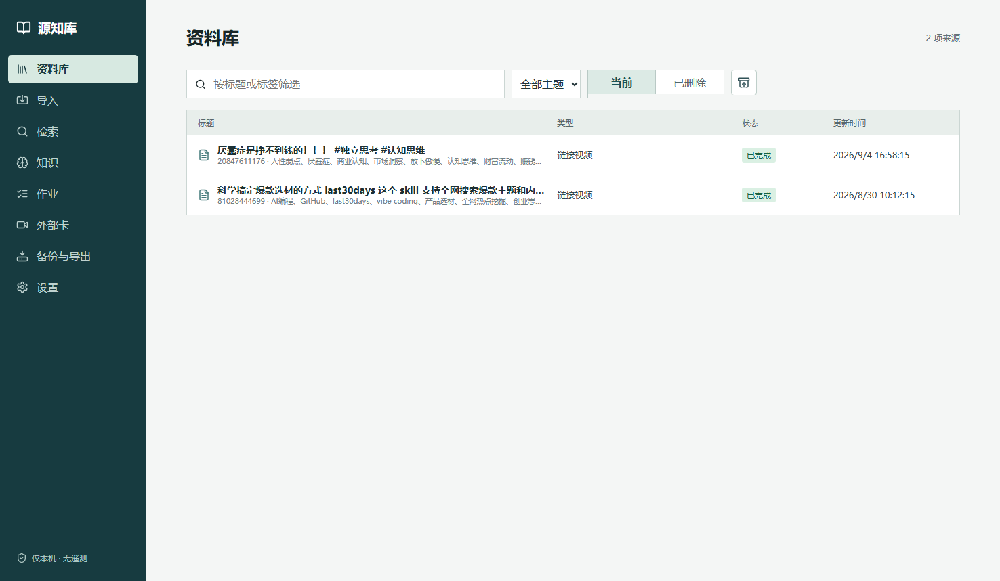
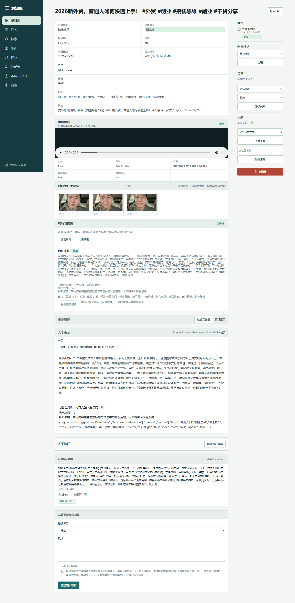
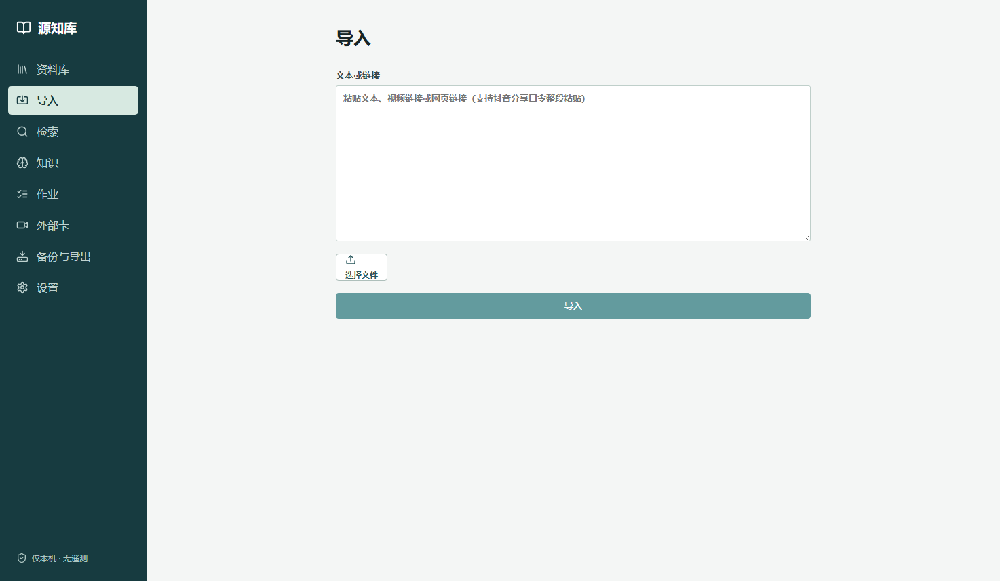
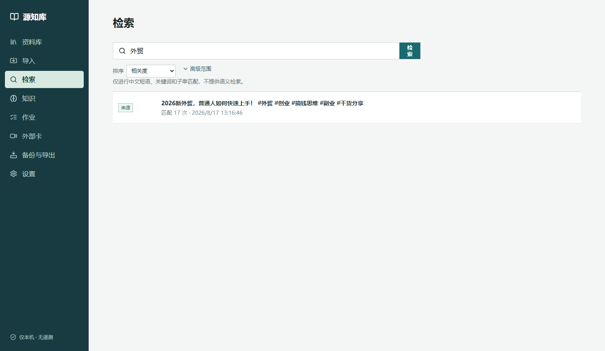
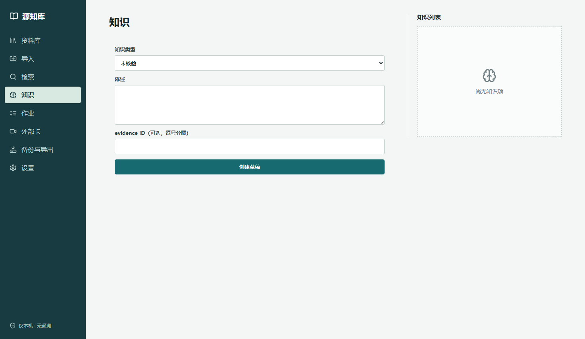
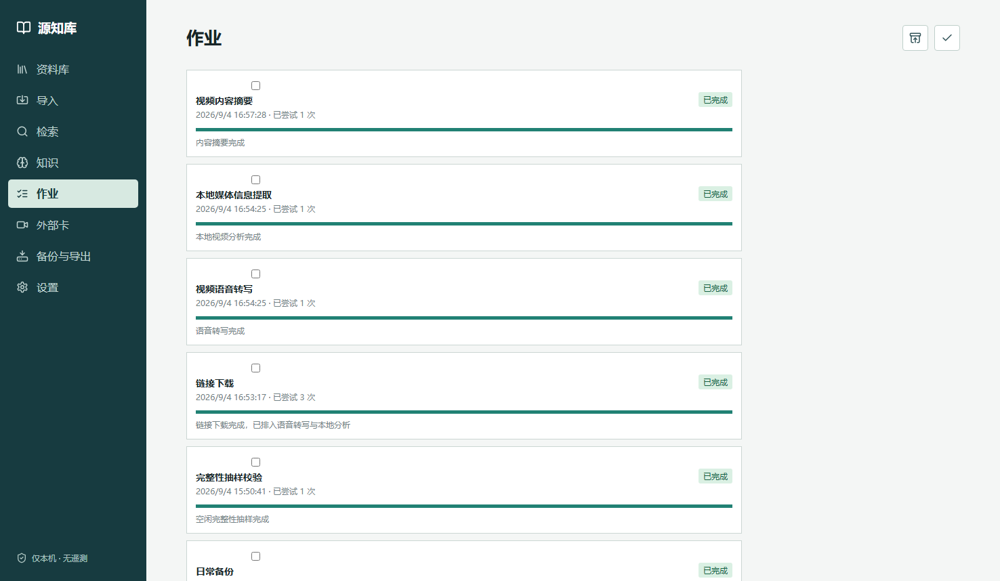
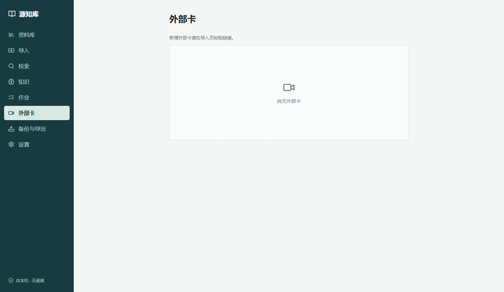
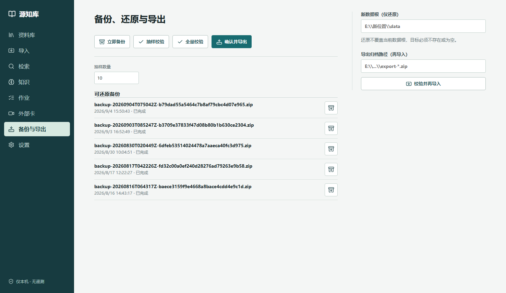
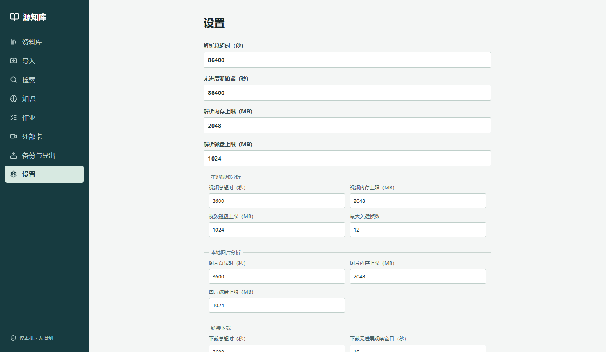

一、这是一个什么系统
源知库是一个运行在你自己电脑上的个人知识库。它把散落的资料——文档、图片、音视频、粘贴的文字、B站/抖音视频——统一收进来，解析出文字内容，建立可溯源的证据链，再由你亲手把其中有价值的结论蒸馏为"知识"。
三条核心设计哲学（决定了它的脾气）
- 隐私优先：只监听本机回环地址
127.0.0.1，没有账号体系、没有遥测、没有广告。除了你显式配置的 AI 服务和视频下载，它不联网。界面左下角常驻"仅本机 · 无遥测"标识。 - 原料不可变，证据可溯源：每个文件按内容指纹（SHA-256）只存一份，原文永不修改；系统生成的每一段文字都能追回到原文的具体位置（PDF 第几页、视频第几秒）。
- 机器干粗活，人做判断：解析、转写、摘要、查重由系统自动完成；而"这条结论是否成立""这两条资料是什么关系""如何归类"——这些判断刻意留给人工，系统绝不替你下结论。
二、启动与界面总览
如何启动
- 双击项目根目录的
启动源知库.cmd（或桌面快捷方式）。 - 它会自动选择本机空闲端口（首次一般是
8765，会记住），启动后自动打开浏览器，地址形如http://127.0.0.1:8765。 - 如果已经在运行，再次双击只会帮你打开浏览器标签，不会重复启动。
- 关闭启动时弹出的命令行窗口即停止服务。
界面骨架
界面是"左侧导航 + 右侧内容"的单页应用，共 8 个栏目：
| 栏目 | 干什么 | 谁执行 |
|---|---|---|
| 资料库 | 所有来源的列表 + 来源详情页（看内容、改元数据、建关系/主题/知识） | 人工策展 |
| 导入 | 统一入口：粘贴文本 / 粘贴链接 / 选文件 | 人工发起 系统处理 |
| 检索 | 跨全部来源的字面关键词检索 | 人工查询 |
| 知识 | 知识草稿列表、发布 | 人工策展 |
| 作业 | 后台任务看板：进度、失败原因、重试/取消 | 系统执行 人工监督 |
| 外部卡 | 只存链接的收藏卡（不下载内容） | 人工收藏 |
| 备份与导出 | 备份、校验、还原、导出/再导入 | 日常自动 + 操作人工 |
| 设置 | 性能限额、AI 服务配置、自动流水线开关 | 人工配置 |
三、八个栏目逐个讲
3.1 资料库：你的来源都在这

核心概念：来源（Source）。库里每一条记录叫一个"来源"——一个文件、一段粘贴文本、一个视频，都是一条来源。来源携带：标题、作者、来源日期、语言、领域/体裁/标签、权利声明（导入时必填：原创/已获授权/许可使用/开放许可/其他）。
点任意一行进入来源详情页——这是整个系统信息最密集的页面，也是你日常策展的主战场：

| 详情页面板 | 内容 | 谁产生 |
|---|---|---|
| 元数据区（顶部） | 标题、作者、日期、语言、领域/体裁/标签、备注、权利声明，均可编辑；每次修改都会留下修订快照 | 人工（AI 可建议，见下） |
| 版本（右上） | 内容版本列表（当前导入路径固定为第 1 版）与原始文件信息 | 系统 |
| 本地视频 / 原文预览 | 视频可直接在页面内播放；PDF/图片有只读隔离预览 | 系统 |
| 关键帧 | 系统按"场景切换 + 均匀抽样"自动截取的视频帧，每帧也是不可变存档 | 系统 |
| 转写与摘要 | 语音转写全文、AI 内容摘要；未生成时可在此手动触发"语音转写 / 内容摘要"作业 | 系统 可手动触发 |
| 文本表示 | 每次解析产出的不可变文本版本（抽取/转写/摘要/人工修订），带解析器身份指纹 | 系统 |
| 证据与引用 | 每条 evidence 是一段 ≤300 字的原文摘录 + 定位信息（PDF 页码/视频时间段）。点"引用"看完整上下文，点"定位"跳到原文对应位置并高亮 | 系统 |
| 人工修订 | 发现机器转写/解析有误？在这里提交修正文本，系统会新建一个"人工修订"表示，不覆盖原始内容 | 人工 |
| 从证据创建知识 | 勾选证据 + 用自己的话写陈述 → 创建知识草稿（详见 3.4 与第五章） | 人工 |
| 关系（右栏） | 把本条与另一条来源连起来：新版本 / 修订版本 / 相关 / 同一作品 | 人工 |
| 主题（右栏） | 把本条挂进手工主题合集，或新建主题 | 人工 |
| 删除（右栏底部） | 两段式：先软删（进"已删除"页签，可恢复）；永久删除需在已删除状态下再确认，系统会连带清理全部派生数据和无人引用的原始文件（极少数情况下文件被占用删不掉时，会记入清理队列自动后台重试，逻辑删除不受影响） | 人工 |
3.2 导入：一个入口，自动识别

粘贴或选文件后，系统会先做只读预填（识别 PDF/DOCX 元数据、图片 EXIF、视频链接的平台标题），帮你把标题等字段预填好——预填失败不阻塞导入。识别规则：
| 你给的输入 | 系统识别为 | 后续动作 |
|---|---|---|
| 大段文字 | 粘贴文本（≤10MB） | 直接入解析作业 |
| B站 / 抖音视频链接 | 链接视频 | 先入"链接下载"作业，下载后按本地视频处理 |
| 其他网页链接 / 勾选"存为卡片" | 外部卡 | 只存链接元数据，不下载、不入库解析 |
| .pdf / .docx / .md / .txt 文件 | 文档 | 本地解析作业 |
| .jpg / .jpeg / .png / .webp | 图片 | 本地图片分析（尺寸/EXIF，无 OCR） |
| .mp4 / .webm | 本地视频 | 视频分析（元数据 + 抽帧）→ 可续转写、摘要 |
导入时必须选择权利声明（这条内容你是否有权保存使用），还可以填标题、作者、日期、领域/体裁、自由标签。单文件上限 2GB，磁盘需保留足够余量（文件两倍空间 + 10GB 保底），不够会在上传前被拦下并提示。
3.3 检索：精确匹配，不玩语义

- 匹配方式：字面包含（大小写不敏感），按出现次数计"相关度"排序，也可切换最新优先；"高级范围"里可按领域/体裁/标签/主题/来源类型过滤，默认只搜最新完整版本、不含已删除来源。
- 能搜到什么：标题、作者、备注、正文类文本（解析/转写/摘要/人工修订）。视频元数据模板文本、分类标签 token 被明确排除，避免干扰。
- 结果类型：来源 / 知识 / 外部卡三类混排，点击直达。
- 实际含义：搜"外贸"能命中，搜"国际贸易"不会自动联想"外贸"。检索词要尽量用原文里真实出现过的说法。
3.4 知识：从证据到你的结论

知识是这个系统的"最终产物"：一条你自己的陈述 + 支撑它的证据。分两步走：
- 创建草稿：在来源详情页"从证据创建知识"区，勾选相关 evidence，选类型（事实/观点/指令/案例/引文/未核验），用自己的话写陈述，提交。
- 发布：到"知识"栏目点发布。发布有硬性校验——事实/指令/案例必须挂着有效证据；观点/引文/未核验可以无证据发布。这就是"知识可溯源"的强制保证。
3.5 作业：后台任务的透明看板

所有耗时工作都是"作业"：本地解析、媒体信息提取、语音转写、内容摘要、链接下载、AI 分类、日常备份、完整性校验、artifact 清理重试。作业状态机：
3.6 外部卡：轻量收藏夹

适用场景：文章/视频你还在犹豫要不要收进来，先存张卡 bookmark；或者内容在别处的在线资源，只需记住入口。想正式入库时，把链接再走一遍导入即可。
3.7 备份与导出：数据的保险柜

- 备份：自动（每日）+ 手动。备份是带清单指纹的 zip 包，存于数据目录
data/backups/。 - 校验：抽样校验/全量校验——重新计算存档文件的 SHA-256 与登记值比对，发现文件损坏会报告。建议换机、升级、大扫除前做一次全量校验。
- 还原：选备份 + 填新数据根路径，还原到全新位置（绝不覆盖当前数据）。备份包会与备份目录记录锚定校验——手动替换过的备份包会被拒绝，防止还原到被篡改的数据。
- 导出/再导入：导出成归档 zip 带走；在另一个源知库实例上"校验并再导入"。再导入时做主键+自然键双重冲突检测，同内容 artifact 自动去重，冲突项会列出来给你；若已入库的存档文件意外丢失或损坏，再导入会从归档中自动修复。
3.8 设置：限额与 AI 配置

设置页向下还有三块重要配置：
- 媒体 AI 凭据：转写端点（OpenAI 兼容 API）、理解模型（摘要/分类）、视频直送模型（通义千问/MiMo，可配中转或对象存储通道）。密钥只存在本机
data/state/ai/credentials.json，绝不写进数据库、日志、备份和导出包。 - 自动流水线开关：开了之后，视频分析完自动接力转写、转写完自动接力摘要、文档解析完自动接力 AI 分类；关掉则全部需要你在详情页手动触发。
- 本地转写模型：本地 FunASR 中文模型的下载与校验（白名单锁定，校验哈希通过才可用）。本地模型可用时优先本地转写，失败可降级到你配置的远程 API。
四、导入流程详解（幕后发生了什么）
点下"导入"按钮后，系统做三件事：加锁 → 按内容指纹落盘去重 → 单事务建档并派发作业。之后后台作业接力完成解析等深加工。全链路如图：
4.1 去重：内容指纹说了算
同一个文件（哪怕文件名不同）指纹相同，第二次导入时不会再占磁盘，只新建一条来源引用同一份存档。反过来，两条来源指纹相同时，详情页会提示"同作品候选"，由你决定是否标记为"同一作品"关系。
4.2 特殊状况手册
| 状况 | 系统行为 | 你该怎么办 |
|---|---|---|
| PDF 已加密 | 作业置"受阻"，提示已加密 | 解密后重新导入 |
| PDF 无文本层（扫描件） | 标记 awaiting_ocr（等待 OCR），保留原件 | 系统无 OCR；先用别的工具转文字，再把文本粘贴导入 |
| 解析器降级 | 首选解析器不可用时自动回退到备用方案，并记一条审计 | 无需处理，结果照常可用 |
| 链接下载失败 | 作业失败，给出脱敏中文原因（平台风控/网络/格式等） | 按提示排查后重试作业 |
| 磁盘不足 / 文件超 2GB | 上传前直接拦截 | 清理磁盘或拆分文件 |
| 文件内容与扩展名不符（如把 .txt 改名 .pdf） | 入库前校验拒绝（422），不留任何残留 | 确认文件真实格式后重新导出/导入 |
| PDF 内容损坏 / DOCX 结构异常或超限 | 入库前校验拒绝（422；解压体积超限为 413） | 用原始来源重新获取，或用 Office/WPS 重新另存后导入 |
| 文本文件含异常空字节 | 入库前校验拒绝（422） | 用文本编辑器转存为 UTF-8 后重新导入 |
| 标签超 100 项 / 单标签超 100 字 / 请求体超 12MiB | 校验拒绝（422 / 413） | 精简标签或拆分内容后再导入 |
| AI 作业失败（转写/摘要/分类） | 只该作业失败，来源本身仍然是"已完成" | 检查设置页 AI 配置后手动重试 |
五、知识生成与入库规则
这一章讲数据在库里长什么样。理解它，你就知道每个功能为什么这样设计。
5.1 证据链：一切皆可溯源
5.2 文本表示与检索切块
- 文本表示（representation）：同一来源可以有多个文本表示——最初解析的"抽取"、语音"转写"、AI"摘要"、你的"人工修订"。每个表示带身份指纹（解析器名+版本+配置哈希）：同一身份重复处理自动跳过（幂等），同一身份内容不一致直接报错（防数据撕裂）。
- 检索切块：正文按 1200 字硬切、无重叠、无语义边界，每块带指纹，仅供检索命中用。切块不是证据，不能挂在知识上。
- 检索默认只看最新完整版本；已删除来源不参与检索。
5.3 AI 能做什么、不能做什么
| AI 产物 | 引擎 | 入库规则 |
|---|---|---|
| 语音转写 | 本地 FunASR 优先，可降级 OpenAI 兼容 API | 写成"转写"表示 + 带视频时间段的证据；引擎与降级事实记入身份指纹 |
| 内容摘要 | 理解模型（200–600 字约束）；转写疑似不完整时可用视频直送多模态补全 | 写成"摘要"表示；附分类建议标记 |
| 分类建议 | 理解模型（领域 0–3 / 体裁 0–1 / 标签 0–8） | 只填空缺：你填过的字段绝不覆盖；标签取并集合并；无可填则不动数据库 |
5.4 数据落在哪
| 位置 | 内容 |
|---|---|
data/artifacts/<指纹前2位>/<指纹> | 原始文件与视频帧，不可变，按指纹去重 |
data/state/knowledge.db | SQLite 主库：来源、版本、表示、证据、知识、关系、主题、作业、审计（可切换 PostgreSQL） |
data/staging/ | 临时工作区（上传暂存、下载、抽帧、音轨），作业结束即清理 |
data/backups/ · data/exports/ | 备份 zip 与导出归档 |
data/state/ai/credentials.json | AI 密钥（仅此一处，不进库/日志/备份/导出） |
data/models/ | 本地解析/转写模型缓存（白名单锁定、哈希校验） |
六、哪些系统自动做，哪些必须你来
一张总表记住分工。自动 表示系统完成无需干预；人工 表示只能你动手（系统刻意不做）；混合 表示系统执行但需要你发起或配置。
| 事情 | 执行者 | 说明 |
|---|---|---|
| 文件落盘、指纹去重、建档 | 自动 | 导入瞬间完成，失败自动回滚 |
| 文档解析 / 图片元数据 / 视频抽帧 | 自动 | 纯本地，无网络；断路器保护 |
| B站/抖音链接下载 | 混合 | 你粘链接，yt-dlp 自动下载并入视频管线 |
| 语音转写、AI 摘要、AI 分类建议 | 混合 | 需你在设置页配置 AI/模型；开自动流水线后自动接力，否则详情页手动触发 |
| 检索索引（1200 字切块） | 自动 | 随解析产物一并落库 |
| 每日备份、完整性抽样 | 自动 | 每日首次启动自动排队；手动备份/全量校验在"备份与导出" |
| 作业失联回收、失败重试 | 自动 | 租约机制；你也可以在作业页手动重试/取消 |
| 元数据预填（导入表单） | 自动 | 只读识别，可改可不管 |
| 编辑标题/作者/标签/权利声明 | 人工 | AI 建议只填空缺，你填的永不覆盖 |
| 关系：连接两条来源 | 人工 | 系统只提示"同作品候选"，确认在你 |
| 主题：建合集、挂来源 | 人工 | 完全手工；区别于 AI 分类的"领域/标签" |
| 知识：写陈述、挂证据、发布 | 人工 | 发布校验由系统强制执行（事实类必须带证据） |
| 人工修订（修正机器误读） | 人工 | 新建修订表示，原文不动 |
| 删除 / 恢复 / 永久删除 | 人工 | 两段式防误删；永久删除先记账再执行 |
| 还原 / 导出 / 再导入 | 人工 | 在"备份与导出"页操作，冲突由你裁决 |
七、实战：以"2026新外贸"为例走一遍
你库里这条链接视频已经处理完毕（转写 1828 字 + AI 摘要已生成）。现在用它把三个手工功能点亮：
第 1 步 · 建一个主题（1 分钟）
- 打开该视频详情页 → 右侧"主题"区
- 在"新主题名称"输入
外贸入门→ 点"新建主题"，本条来源自动挂入 - 回"资料库"，顶部"全部主题"下拉现在能按
外贸入门筛选了
第 2 步 · 发布第一条知识（3 分钟）
- 详情页找到"证据与引用"区 → 找到转写证据（带视频时间段定位那条）
- 下方"从证据创建知识"：类型选
案例或事实 - 用自己的话写陈述，例如："2026 年普通人做外贸，可从 XX 切入，先 XX 再 XX"
- 勾选那条转写证据 → 点"创建知识草稿"
- 左侧导航进"知识" → 找到草稿 → 点"发布"（若提示需要证据，说明没勾选 evidence）
- 以后在"检索"里搜"外贸"，这条知识会和来源一起出现
第 3 步 · 建第一条关系（等你有第二条相关来源后）
- 再导入一条相关内容，比如同系列的另一期视频、或该视频的图文稿
- 打开任一条详情页 → "关系"区 → 选择另一条 → 类型选
相关（若一个是另一个的更新版，选"新版本"）→ 创建 - 若两条是同一内容的不同载体（同指纹/同标题），系统会出"同作品候选"，一键标记"同一作品"
可选 · 修正转写错误
本地转写难免有错字。在详情页"人工修订"区提交修正后的文本：系统新建一个 人工修订 表示（检索、证据都以它为准），原始转写保留不动，任何时候都能对比机器版与人工版。
八、常见问题 FAQ
Q1：为什么我的来源详情里"关系 / 主题 / 知识"全是空的？
正常。这三样是纯人工策展功能，系统不自动创建。库里只有一条来源时"关系"天然为空（关系需要两条来源）；主题和知识等你按第七章的步骤创建。
Q2：AI 摘要/分类没有出现？
检查"设置"页：① 是否配置了理解模型的 API 密钥；② "自动流水线"是否开启。也可以直接在详情页"转写与摘要"区手动点按钮触发，然后到"作业"页看执行结果与失败原因。
Q3：扫描版 PDF 导入后提示"等待 OCR"？
系统刻意不内置 OCR（避免隐式下载大模型）。用任意 OCR 工具把扫描件转成文字后，以"粘贴文本"方式再导入一条，并用"关系"把两条连起来。
Q4：检索搜不到我以为有的内容？
它是字面匹配：① 换个原文真实出现过的说法（"外贸"≠"跨境贸易"）；② 确认来源处理状态是"已完成"且不在"已删除"里；③ 图片只索引 EXIF 元数据，图片里的文字内容不参与检索。
Q5：换电脑怎么搬走整个库？
方式一：备份与导出页 → "确认并导出"得到 zip → 新机器上"校验并再导入"。方式二：直接整体拷贝 data/ 目录（停机状态下）。搬完记得做一次"全量校验"。
Q6：AI 密钥安全吗？
密钥只存本机 data/state/ai/credentials.json，不进数据库、日志、备份、导出包；所有 AI 报错都脱敏后才显示。导出归档给别人时天然不带密钥。若凭据文件损坏，相关功能会明确报错（503）并拒绝覆盖——按界面提示修复或删除该文件重新配置即可。
Q7：作业卡住或失败了？
"作业"页看状态：失败会显示脱敏原因，点"重试"即可；"受阻"表示缺前置条件（FFmpeg 缺失、AI 未配置、PDF 加密），按提示补齐再重试。中途关机导致的假死作业会被租约机制自动回收重排。
Q8：会不会误删我的原始文件？
不会。删除是两段式：先软删（随时恢复）；永久删除需二次确认，且系统只在"无人引用"时才删除存档文件——同一份文件被多条来源共享时，删一条来源绝不动文件。删除动作全部留审计（保留 ≥366 天）。若永久删除时个别存档文件因被占用删不掉，系统会把清理任务记入队列并在后台自动重试（作业页可见），逻辑删除不受影响。
Q9：想从其他设备或用局域网 IP 访问，打不开？
设计如此。系统只接受来自本机回环地址（127.0.0.1 / localhost）的访问；用局域网 IP、其他域名或携带异常头的请求会被直接拒绝（403）——这是刻意的隐私边界，不是故障。
本指南基于本机实际部署与真实数据生成 · 截图取自你当前的库 · 源知库 · 仅本机 · 无遥测